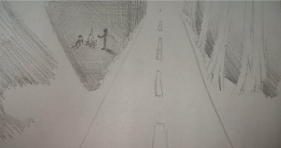
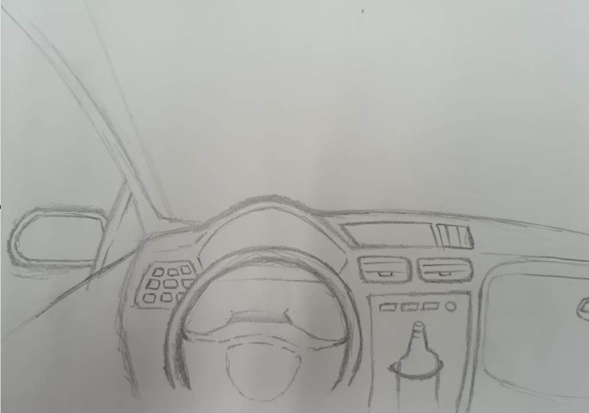
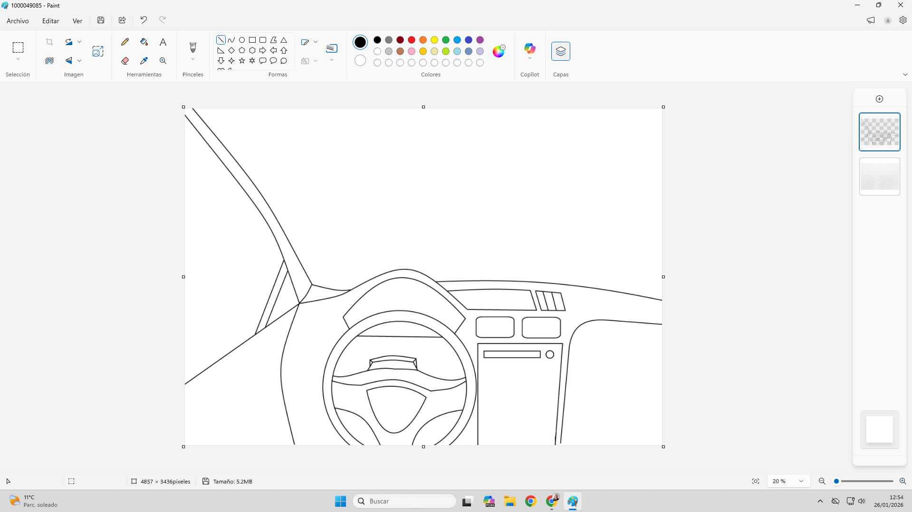
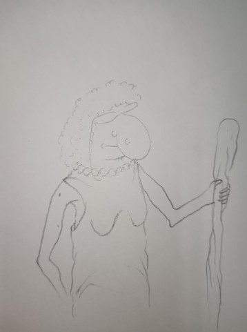
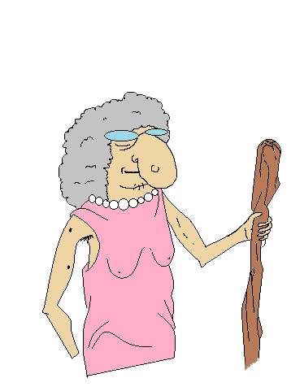
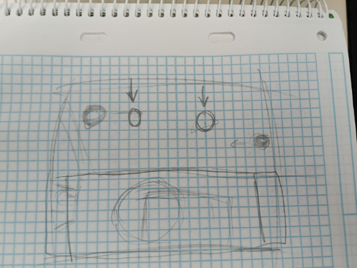
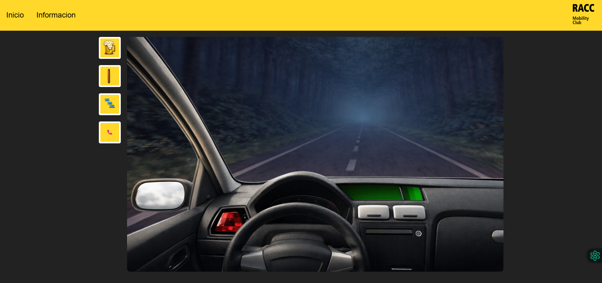

Carrera contra la distracción
Un proyecto de videojuego educativo centrado en la conducción responsable. El jugador controla un coche y debe evitar distracciones mientras mantiene la visibilidad y el control del vehículo para no atropellar a peatones u obstáculos.
Resumen del proyecto
Carrera contra la distracción es un juego en el que el conductor sufre distintas distracciones durante la conducción. Cada vez que utiliza una distracción, empeora su capacidad de reacción, el control del vehículo o la visibilidad de la carretera. El objetivo principal es esquivar o frenar a tiempo para no atropellar a nadie.
Objetivo principal
Concienciar sobre los peligros de la distracción al volante mediante una experiencia interactiva y visual.
Mecánica base
Movimiento lateral del coche, reducción de control/visión al distraerse y reacción ante obstáculos.
Partes pendientes
Pasar información a Markdown en una pestaña ya creada y resolver la hitbox del sistema de obstáculos.
Enfoque visual
Diseño propio con bocetos, digitalización, IA para mejora gráfica y estética inspirada en RACC.
Fondo animado
Esta parte constituye la base visual del proyecto. Fue una de las secciones más complejas porque había muchas ideas para simular una carretera en movimiento sin depender de herramientas externas como Unity.
Ideas iniciales y decisiones
- Uso de Unity para crear el escenario (descartado por limitaciones de permisos en los equipos).
- Crear un GIF animado de la carretera (descartado).
- Modelado 3D de la carretera (descartado).
- Imagen estática de fondo (considerada demasiado simple).
- Carrusel de imágenes en movimiento (solución elegida).
Cómo funciona el carrusel de carretera



Se diseñó una carretera base y el interior del coche sobre papel para definir composición y perspectiva.
Los bocetos se pasaron a formato digital y se limpiaron las líneas para preparar una versión más usable dentro del juego.
Se usó IA para mejorar nitidez, calidad visual y coherencia entre elementos del fondo y del coche.
Se colocaron 4 imágenes consecutivas para simular movimiento y se superpuso el interior del coche como marco inmersivo.
Imágenes y recursos visuales
Todas las imágenes del proyecto siguen un proceso común: boceto manual, conversión a digital con herramientas como Paint o IbisPaint y mejora posterior con IA para conseguir un resultado más profesional.
El flujo de trabajo visual parte de un dibujo hecho a mano, después se digitaliza y finalmente se pule con IA para corregir proporciones, dar mejor acabado y unificar el estilo del proyecto.
Para los iconos y elementos sueltos, se eliminó el fondo con remove.bg, facilitando su integración dentro de la interfaz del juego y mejorando la limpieza visual general.
Esta sección está preparada para que insertes todas las fotos del proceso: bocetos, versiones en Paint/IbisPaint, mejoras con IA y recursos finales listos para el juego.



Efectos (preparado para completar)
Esta parte sigue en proceso, así que la página queda preparada para añadir más adelante los efectos visuales, de sonido o de feedback del jugador.
- Efectos al distraerse (desenfoque, vibración, reducción de visibilidad).
- Efectos al frenar o esquivar obstáculos.
- Sonidos de impacto, bocina, frenado o avisos visuales.
- Feedback visual al perder control del vehículo.
Obstáculos y sistema de hitbox
El objetivo del juego es esquivar obstáculos moviendo el coche de izquierda a derecha con las flechas del teclado. Esta parte es una de las pendientes principales, especialmente por la implementación de la hitbox necesaria para detectar colisiones de forma justa.
Obstáculo principal: la abuela
Idea de hitbox y funcionamiento
Control
Movimiento lateral con flechas izquierda/derecha para evitar impactos.
Detección de colisión
La hitbox debe ser ajustada para no ocupar todo el sprite y permitir esquives realistas.
Recomendación técnica
Usar una hitbox rectangular más pequeña que el sprite visual, centrada en la parte baja del coche.
Estado
Sección pendiente de implementación final dentro del juego.



